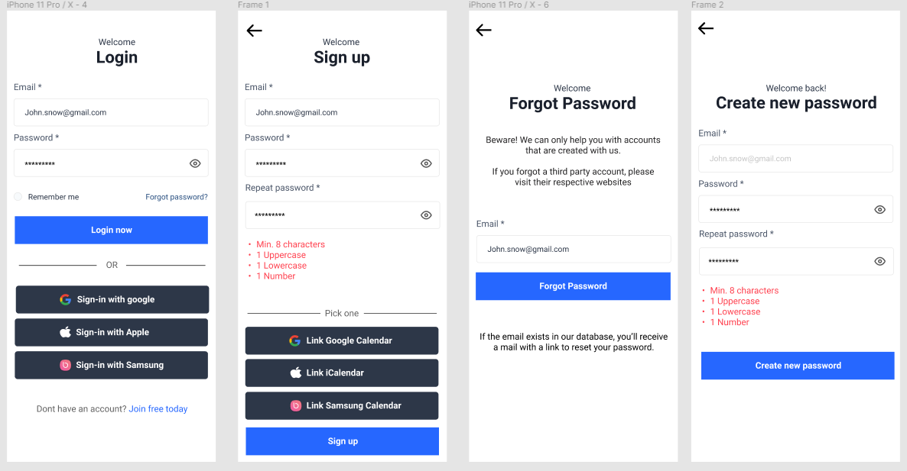
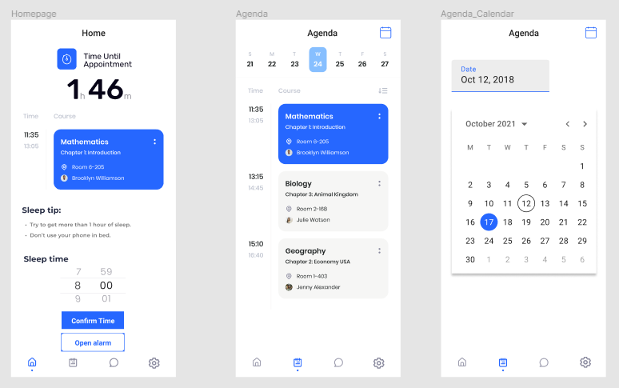
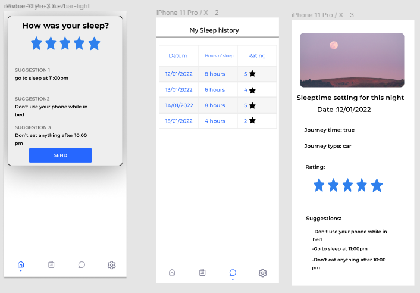

Tussen 30 september en 21 oktober elke donderdag heb ik deelgenomen aan de innovatieroute UI/UX op de derde verdieping van de B-blok. Deze innovatieroute werd gegeven door 3 sprekers van 2 verschillende bedrijven. De sprekers waren: Katrijn Caelen, Shana Houben van het bedrijf Appwise x Wisemen en Christoph van Ochten van het bedrijf Appfoundry.
De eerste dag hebben ze uitgelegd wat Appwise x Wisemen doet als bedrijf. Ze maken applicaties voor klanten met een groot belang naar design en gebruikservaring, Maar ze maken ook niet voor elke klant een applicatie het moet een positieve impact hebben op de maatschappij waarin we leven. De reden dat Appwise x Wisemen zo hard groeit is omdat ze samen met klant innovatief gaan samen denken en zo gaan ze de hele weg samen van begin tot eind. Onze eerste opdracht was “Wat zou je veranderen aan de app Tinder?”. Voor deze oefening zijn we gaan brainstormen in een groepje van vier tot vijf studenten om te kijken wat we kunnen veranderen, dit ging traag dus heb ik Tinder effectief geopend en gebruikt om te zien wat mijn gebruikerservaring zou zijn en wat ik zou willen veranderen aan Tinder. Wij dachten eraan om videogesprek functionaliteit te implementeren, omdat sommige gebruikers een slachtoffer zijn van catfishing. Daarnaast wouden we ook interesses van elke profiel laten zien aan de gebruikers zodat mensen bij elkaar kunnen swipen op basis van interesses. Nadien is elke groep zijn idee gaan pitchen vooraan in de klas en hebben we feedback gekregen van de sprekers. Vervolgens hebben we uitleg gekregen over het belang van een gebruiksvriendelijk design. We hebben geleerd wat de customer journey matrix is. Deze matrix brengt de uitdagingen die de gebruiker tegenkomt tijdens het gebruik van de applicatie op kaart. Voor de tweede dag kwam de medewerker van Appfoundry met een opdracht. Deze opdracht ging over een mobiele applicatie die we moesten ontwerpen om een voorkomende problemen op te lossen bij de studenten van de Hogeschool PXL. Door middel van Miro hebben we ons probleem kunnen identificeren en dit hebben we gedaan door elk groepslid een probleem te schrijven en hierna dan op een van de problemen te stemmen. Het onderwerp waarvoor wij hebben gekozen is “Te weinig slaap”. Hierbij wouden wij het probleem oplossen dat studenten zonder slaap naar school komen. De volgende stap was dan vragen te stellen over het probleem. Dit zorgt ervoor dat we het probleem beter begrijpen, zodat we de best mogelijke oplossing vinden. Nadat we het probleem hebben vastgesteld en onze vragen hebben geformuleerd was het tijd om het probleem op te lossen. Dit hebben we gedaan door de vragen die we hadden een antwoord daarop te vinden. De week nadien zijn we begonnen aan de Wireframes van de applicatie. Een Wireframe is een blauwdruk over welke functionaliteiten de app gaat bevatten en hoe de gebruiker gaat interacteren met het systeem. Ons doel was om de Wireframes zo efficiënt mogelijk te maken zodat de gebruiker een goede gebruikerservaring heeft bij het gebruiken van de app. Langs de gebruikerservaring is de gebruiksvriendelijkheid ook van belang. Dit houdt in dat de gebruiker alles makkelijk moet kunnen terugvinden, kunnen navigeren en dat de applicatie overzichtelijk is. Uiteindelijk in de laatste week zijn we begonnen met het ontwerpen van de mock-ups. Mock-ups is de volgende stap na de Wireframes. Dit laat zien hoe de applicatie effectief eruit gaat zien en helpt de programmeurs met het maken van de applicatie. Ons onderwerp ging over slapen, dus hebben we besloten om rustige kleuren te gebruiken binnen de applicatie zoals: blauw.
  Deze innovatieroute heeft me inzicht gegeven dat de gebruikservaring en de gebruiksvriendelijkheid van een applicatie is zeer belangrijk is. De sprekers van Appwise x Wisemen hebben mij geleerd hoe meer creatief kan denken en dat kan toepassen op ontwerpen van applicaties. Doorheen deze ervaring heb ik een beter beeld gekregen over designtechnieken en hoe deze toegepast worden. Hierdoor denk ik meer aan de gebruiksvriendelijkheid wanneer ik een applicatie aan het ontwikkelen ben. Ik ben altijd een frontend liefhebber geweest maar ik wist niet dat er zo veel verdiepingen waren hierin. Tijdens de innovatieroute ben ik erachter gekomen dat ik niet zo een creatief persoon ben, maar dit is geen probleem. Als oplossing kan ik naar andermans werk kijken en zo inspiratie opbouwen voor mijn eigen werk. De grote reden dat ik deze innovatieroute opneem is omdat ik mijn stage bij Appwise x Wisemen doe. Wat ze mij vertelde tijdens de innovatieroute sprak mij echt aan dus was ik in actie geschoten en had een kans gevraagd om te solliciteren bij hen. Momenteel doe ik mijn stage daar en alles wat ze ons vertelde zie ook gebeuren binnen het bedrijf. Ik ben zeer blij dat ik aan deze innovatieroute heb deelgenomen, want hierdoor heb ik nieuwe connecties kunnen leggen. Het leukste wat ik vond was dat we kans hadden gekregen om met nieuwe technologieën te werken. Met al de kennis die heb opgenomen sta ik klaar om mijn eigen designs te ontwerpen voor in de toekomst. Hierbij wil ik Appwise x Wisemen bedanken om mij een nieuw beeld te geven over de opmaak van een applicatie.